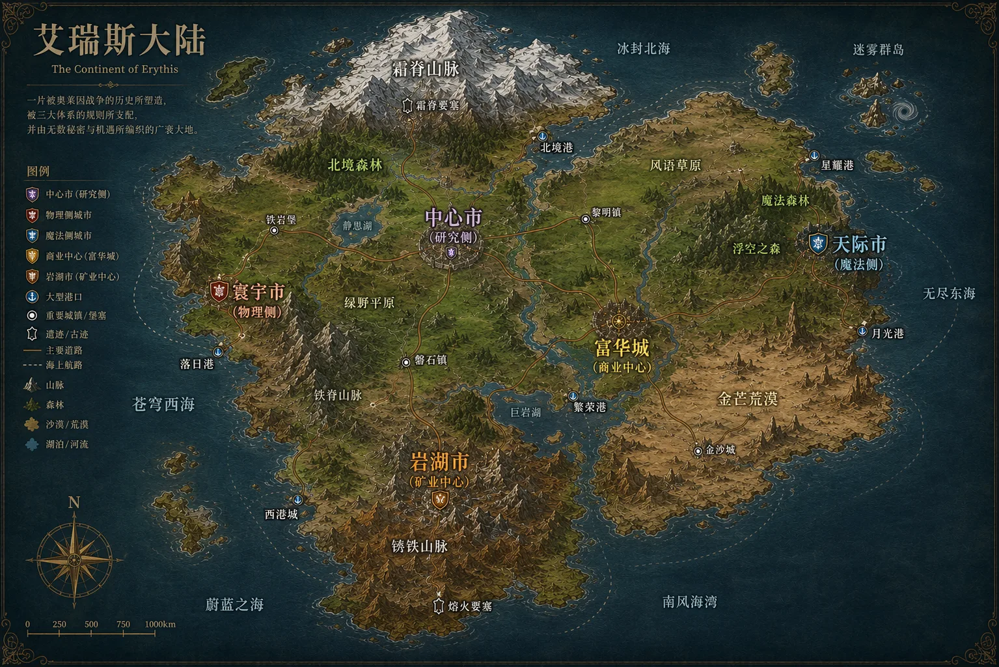
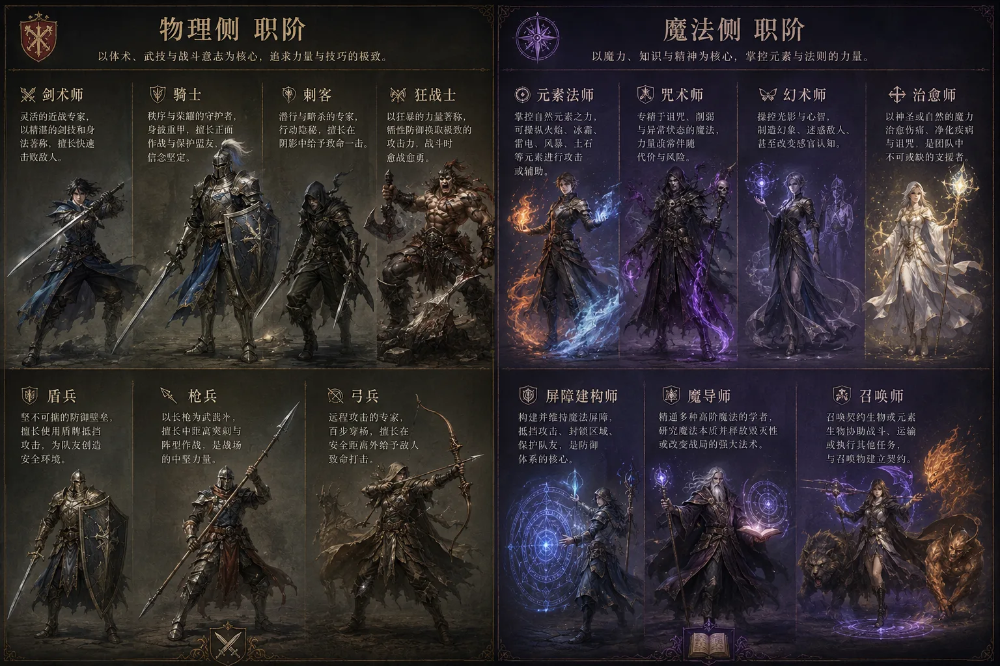
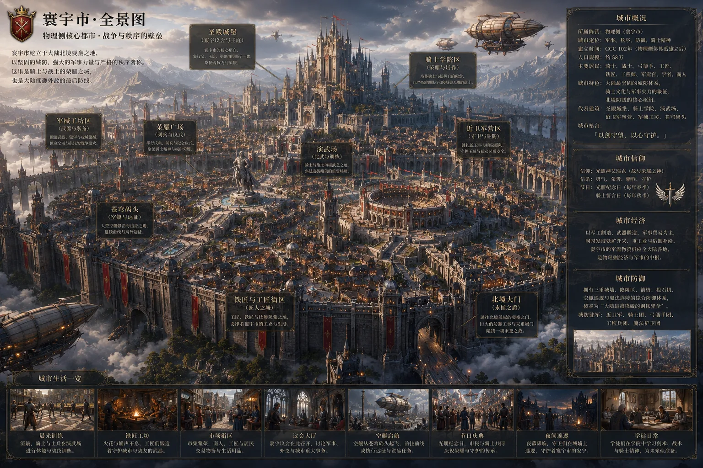
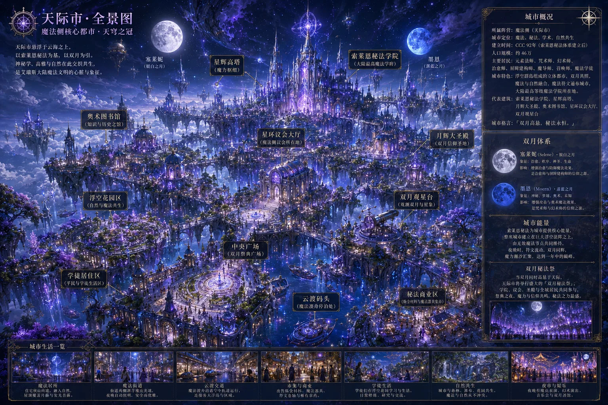
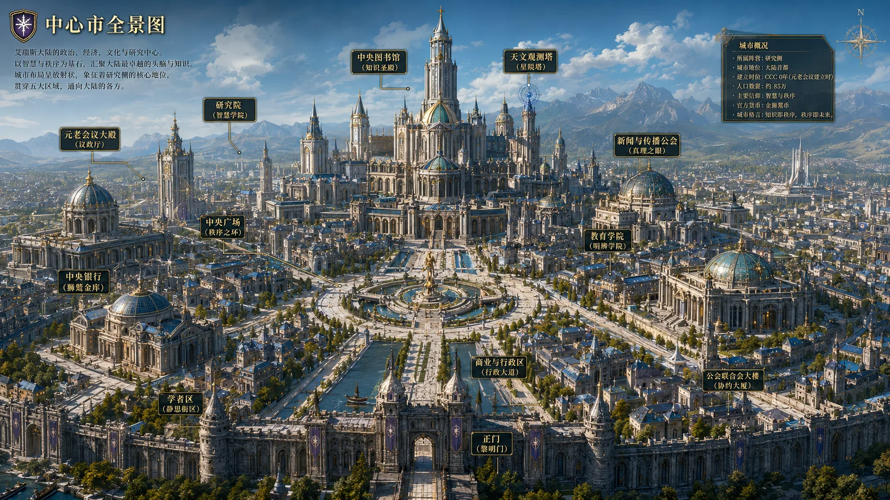
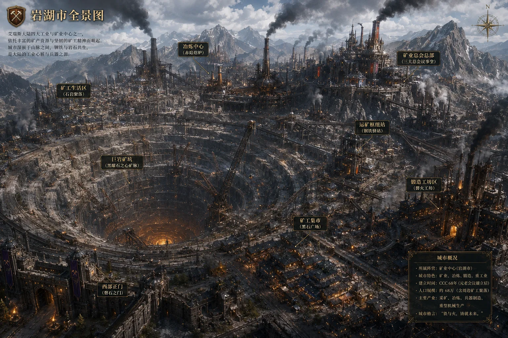
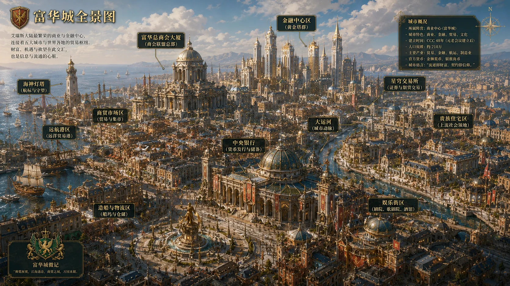
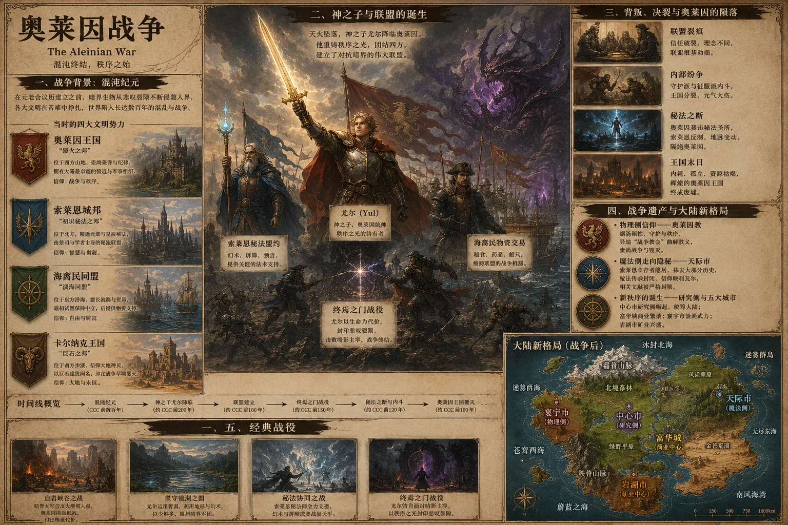

「艾瑞斯大陆」是一个以"物理侧""魔法侧""研究侧"三足鼎立为核心的奇幻世界。物理侧能力者利用冷/热兵器和身体强化进行战斗（职阶如剑术师、骑士、刺客等），魔法侧能力者类似哈利波特或奇异博士那样施展法术（职阶如元素法师、咒术师、幻术师等），而研究侧则是无能力的普通人——他们依靠权力、资本和制度居中制衡，主导公会系统、法律制定与经济管理。
三侧的博弈构成了整个世界的底层张力：能力者掌握力量，但研究侧掌握秩序；元老会议由物理侧与魔法侧的元老级别人物组成，拥有顶层决策权，但日常行政由研究侧把持。这种"无能力者统治有能力者"的政治结构，是艾瑞斯大陆最根本的设定特征。
"物理侧是剑，魔法侧是盾，而研究侧是握剑盾的手。" —— 元老会议首席长老就职宣言

能力偏重利用冷/热兵器和身体强化。七职阶：
能力类似法术施展，七职阶：
研究侧：自身无能力，但研究他人能力来探究能力本质。提供"公会"系统，拥有专业的后勤、法律、经济学者团队。表面上是"服务者"，实则通过制度设计掌控着大陆的核心权力。

同一侧的能力者可以主修一个职阶并辅修另一个职阶。但物理侧不能辅修魔法侧职阶，魔法侧同理——否则体内两股能量会冲突导致暴毙。大陆历史上曾有最高同时修四个职阶的能力者，但辅修越多，主修越弱，最终样样不精。（收录于《艾瑞斯大陆能力者图鉴》）
每个职阶均有等级制度，每级可学习不同的能力。升级评估依据四大板块：力量、速度、技巧、思维（魔法侧额外增加"掌控度"和"释放威力"）。
初习能力者强制从一阶开始。完成一次任务后，经四大板块考核可重新评定等级。早期寰宇城曾有枪兵初习者在讨伐魔物后，因表现出色直接从一阶跃升至三阶。
十阶能力者被称为"法则化身"或"神话位阶"，其存在本身即可对局部现实规则产生可观测的、持续性的干涉。无法通过标准化考核认定晋升，唯一客观依据是引发大规模"现实参数异常现象"。
历史上仅三位确认案例：
元老会议战略框架下，神阶相关事务适用Ω级威胁预案。神阶能力者是文明面对绝对性毁灭威胁时的最终理论防线。
风格近似苏联中期，粗犷尚武。居民以物理侧能力者为主，角斗场文化盛行。奥莱因教的信仰中心，广场上矗立着赫尔加·斯顿贝克的著名雕塑《尤尔之陨》。方言"奥莱因铁舌"铿锵有力，咬字极重。

图片由 GPT image2 生成 · 点击放大
继承古索莱恩城邦的秘法传统，神秘学与高雅气质混杂。高阶法师们倾向于使用基于双月周期的"星月循环"历法。方言"索莱恩秘语"轻柔婉转如吟唱。玻利瓦尔的相关研究在此被严密封锁。

图片由 GPT image2 生成 · 点击放大
中美体制混合物，理性秩序。中央档案馆储存着从公开史料到一级机密的所有知识。大陆图书馆、中央银行、法务研究所均设于此。方言毫无地方特色，极度清晰——"标准音"的地位类似于新华社。

图片由 GPT image2 生成 · 点击放大
三大矿业总会寡头竞争：「深岩之子」（稀有金属）、「穹顶之指」（穹顶矿石垄断）、「磐石联合」（基础矿产）。穹顶矿脉的发现重塑了大陆力量格局。方言"深岩低语"惜字如金，近乎单词电报。

图片由 GPT image2 生成 · 点击放大
六十年代美国黄金时期风格，市井浮华。大陆金融心脏——金狮鹫币的发行、商业储蓄银行、贸易博览会均在此。也是西尔维娅·佩恩"世俗派"艺术的发源地，《三枚银鹿角》的故事就发生在这里的"碎铃铛"小巷。方言"金湾快嘴"语速极快，连读吞音严重。

图片由 GPT image2 生成 · 点击放大
各城市之间人员不断流通，内部还有"镇"和"村"等更小的聚落单位。各地方言不同，但存在通用语言。不同城市的习俗差异巨大——寰宇市和岩湖市粗犷、富华城浮华、天际市神秘、中心市理性。
1枚金狮鹫币 = 10枚银鹿角币 = 500枚棕熊铜币。村/镇集市以棕熊铜币为主流；市区则使用银鹿角币和金狮鹫币，用于购买高级装备、药剂等。各地存在官方默许的"私有货币"，如岩湖城矿区中铁石矿作为替代货币流通。金狮鹫币体系由天才经济学家阿尔德里奇设计，其最后笔记中留下了著名暗语："狮鹫俯瞰，鹿角穿梭，而熊，终将觉醒。"
研究侧主导日常行政，但顶层决策需经元老会议（物理侧与魔法侧元老级别人物）共同裁决。元老会议历以会议成立之年为纪元起点（CCC），之前的历史记为"前元老会议历"（Pre-CCC）。这一架构的微妙之处在于：研究侧掌握行政权，但元老会议中的能力者们拥有否决权——双方既相互制衡，又相互依赖。
六部核心法典：《艾瑞斯大陆宪法》《能力者管理总则》《岩湖市矿区管理条例》《富华城商业规范》《日常管理条例》《地方自治权管理条例》。由中心市法务研究所制定，元老会议批准。执法部门招聘要求主修职阶三阶以上。灰色地带存在黑市，官方默许但不可招摇。
教科书由中心市统一编订。6-12岁义务教育阶段后分轨：觉醒为能力者→公会考试→能力者学校（天赋异禀者学费由市级财政保障）；未觉醒→普通考试（文学/数理逻辑学/语言学）→中学/大学→可进入中心市研究院或从事商业、医疗、矿业等职业。
早期研究侧压制宗教，后经元老会议裁决自由发展：
村镇设"治疗点"（普通感冒约3棕熊币，骨折等约10银鹿角币）；市区设"救治中心"，由治愈师和顶尖医疗学者驻诊，费用更高。治愈师职阶在大瘟疫（CCC前150年）中证明价值后，成为最受尊敬的职阶之一。
普通人以马车为主（约3棕熊币/公里），水路帆船（约2棕熊币/公里）。中心市正研发"汽车"。能力者则有专属方式：骑士马匹快3-4倍、魔导师短距离传送（六阶500米→九阶50公里）、召唤师飞龙（极速63.5米/秒）。
大陆四大艺术流派：
娱乐方面：歌剧院、角斗场（物理侧）、决斗场、魔术会演（魔法侧）遍布各市。灰色地带存在赌场和妓院。四大吟游诗人——里昂·铁喉（《尤尔之陨》）、塞莱娜·维恩斯特（《玻利瓦尔的十二瞥视》）、阿尔瓦罗·克莱恩（《丰碑无需刀剑》）、西尔维娅·佩恩（《三枚银鹿角》）——各自代表不同的阵营立场。

在元老会议历建立前，人类文明分散成数个城邦，在恶劣环境和暗界生物的侵袭下挣扎求存。当时的主要势力包括：奥莱因王国（西方锻火之邦，物理侧雏形）、索莱恩城邦（北方秘法之邦，魔法侧雏形）、海裔民同盟（东方商业城邦联盟）、以及已被暗界摧毁的卡尔纳克王国（南方巨石之邦，其文明彻底掩埋在黄沙之下）。
天火坠落后，婴孩尤尔（Yul）被发现于山巅，身旁插着燃烧银焰的断剑。他重铸断剑为"秩序之光"，成为奥莱因军事统帅。尤尔深知孤军难胜，艰难促成了抗暗界联盟：奥莱因提供战士与武器，索莱恩提供幻术、屏障与预言，海裔民以贸易换取粮食药品。
战争持续数十年，以三场战役著称：血岩峡谷之战（证明暗界可被战胜）、坚守镜湖之围（展现尤尔智谋）、终焉之门战役（最终决战）。在终焉之门，尤尔与"暗影主宰"决战，以燃烧生命为代价将秩序之光插入悲叹裂隙，封印了暗界通道。
尤尔牺牲后，联盟迅速瓦解。奥莱因陷入"守护派"与"征服派"的残酷内斗。一场针对索莱恩圣所的袭击引发了"秘法之断"——索莱恩秘法师启动巨大法术，引发地脉变动，用迷雾将奥莱因与外界隔绝。在内耗、孤立与资源枯竭中，奥莱因王国分崩离析。
奥莱因战争彻底重塑了大陆：物理侧将尤尔神化，形成奥莱因教；魔法侧主动抹去战争贡献记录，将历史转化为晦涩秘仪；海裔民吸收流散人口发展为富华城；幸存学者建立了研究侧和中心市。物理侧与魔法侧之间的不信任种子，就此埋下。
（注：上述为公众版本。战争真相中，索莱恩一位名为"博-L-瓦尔"的秘法大师在最终战役中发挥了扭转乾坤的作用，但此记录被封存于一级机密档案。详见下文。）
阿尔伯图斯·维尔著，CCC 385年出版，大陆经济学基石之作。分四卷论述货币本质（"货币的本质是信用"）、银行系统运作、非官方经济体系（黑市、私有货币）、经济政策与周期性波动。书中那句"狮鹫俯瞰全局，鹿角穿梭流通，而沉睡的棕熊，终有一天会被贪婪或绝望唤醒"被视为对危机的隐晦预言。
维尔又一力作。提出核心框架："能力"本身是一种稀缺生产要素。论证一个三阶火焰法师的效率相当于五十名非能力者总和。提出著名的"维尔悖论"："一个社会的繁荣度取决于其能力者所能达到的生产力高度，而一个社会的稳定度则取决于其非能力者所能获得的生活保障下限。"第六章详细分析了公会任务经济体系。
西里尔·安瑟伦著，CCC 485年初出版。系统记录十四大职阶的能力进阶图表。但最具传奇色彩的是其失落的终章"万流归源：关于'天赋'之根的猜想"——提出了四种颠覆性假说（上古契约、外域遗泽、集体潜意识觉醒、人造之物）。终章在出版前被撤回，西里尔本人也在发行前夜被发现死于家中。官方结论为"过劳"，但他所有关于能力起源的手稿同时不翼而飞。
中心市社会研究所官方权威社会百科全书，定期修订。涵盖衣食住行（各地饮食/服饰/居住风格）、经济科技（职业百工图、魔导工程）、社会秩序（五大城市详述、法律与治理、公共设施与福利）。代表研究侧的"官方视角"。
暗界的起源是艾瑞斯大陆最大的未解之谜。元老会议官方立场为"不作定论，以防任何单一理论被利用"。内部档案收录五种假说：
玻利瓦尔不是一个人，也不是一个神。它是一个"现象"、一个"协议"、一个"回路"。
魔法侧的"集体潜意识海"中，因智慧生物的强烈情绪（尤其是对暗界的恐惧和绝境中的求生意志）与原始魔法能量结合，自发涌现出一个宏大的、非人的"自我调节系统"。它的核心指令非常简单："定义威胁"然后"凝聚力量"。
它通过定义"暗界"来创造一个可以被理解和对抗的"敌人"，同时从智慧生物中筛选出能与自身共鸣的个体，授予他们魔法能力（职阶、法术、等级）。魔法师的成长本质上是与系统同步率的提高——他们的魔法是从系统中"调用"预设好的"程序"。
如果这个真相揭开，将导致：魔法的高贵与神秘感荡然无存；与暗界的战争可能只是系统维持自身的"无限循环"；为了维持"威胁"以继续"凝聚"，系统是否会主动强化暗界？这场战争是否永无尽头？
安全警告：对"玻利瓦尔"的深入研究可能导致严重的认知偏差与精神不稳定。档案仅限元老会议首席长老及指定首席历史学家查阅。
元老会议历（CCC）由中心市天文与历史学者团队制定，是大陆官方通用历法。以"元老会议成立之年"为纪元起点。一年12个月（初生月、雨月、芽月、花月、阳月、暑月、收获月、金月、雾月、寒月、影月、炉火月），每月30日，全年360日。外加5个"庆典日"（新年、仲夏、丰收、先祖之夜、星辰归位），每四年增加第6个闰日。
同时并行的还有物理侧"奥莱因英雄纪年"、魔法侧"星月循环"（基于双月：银白色塞莱妮与湛蓝色墨恩的运行周期）、以及各地古老的地方历法。研究侧最高学术圈还使用"学术纪元"进行超长跨度研究。
铿锵有力，咬字极重。"这件事很重要"→"杰见儿事恨仲要嗷"，尾音拉长元音
轻柔平滑如吟唱。"这个法术很精妙"→"泽伊法舒很晶缪哦"
语速极快，连读吞音。"这样不行，得加钱"→"酱布行得加钱诶"
极度简化，惜字如金。"下面危险，小心"→"下。险。慎。"
中心市方言无任何地方特色，字正腔圆——即为通用语标准发音。任何偏离标准的发音都会被礼貌地纠正："请您按照语音标准重新陈述一遍。"
含方言对照指南、机密档案、历史年表等共16个章节